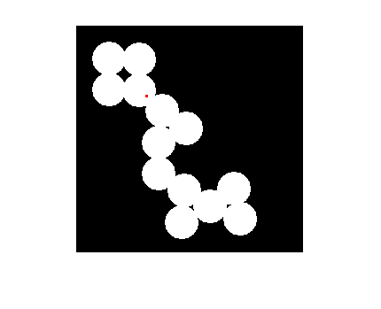
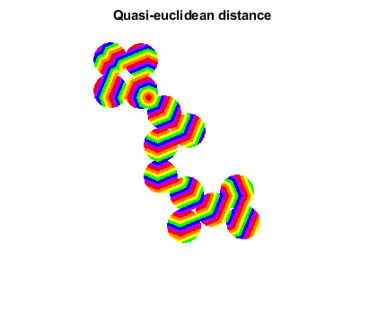

Contents
Read image a create marker
img = imread('circles.png');
marker = false(size(img));
marker(80, 80) = 1;
imshow(imOverlay(img, imdilate(marker, ones(3, 3))));

compute using quasi-enclidean weights
dist = imGeodesicDistanceMap(img, marker, [1 sqrt(2)]);
rgb = double2rgb(dist, prism, [], [1 1 1]);
figure;
imshow(rgb);
title('Quasi-euclidean distance');

compute using integer weights, giving integer results
dist34 = imGeodesicDistanceMap(img, marker, int16([3 4]));
dist34d = double(dist34);
dist34d(~img) = inf;
bounds = [0 210];
rgb34 = double2rgb(dist34d, prism, bounds, [1 1 1]);
figure;
imshow(rgb34);
title('Borgefors 3-4 weights');
The same, using Chess-knight weights
distCK = imGeodesicDistanceMap(img, marker, int16([5 7 11]));
distCK = double(distCK);
distCK(~img) = inf;
bounds = [0 210];
rgbCK = double2rgb(distCK, prism, bounds, [1 1 1]);
figure;
imshow(rgbCK);
title('ChessKnight 5-7-11 weights');